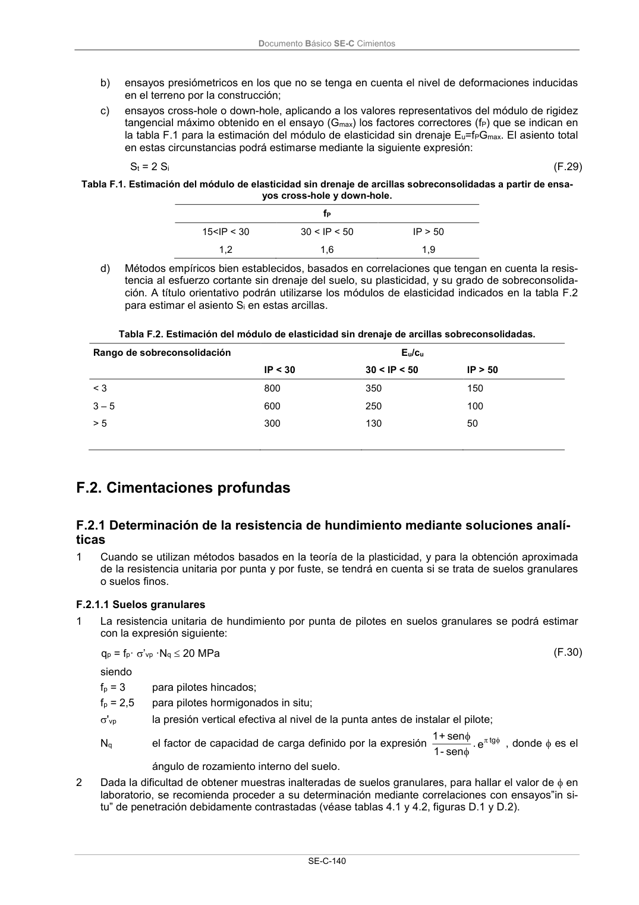

DB-SE-C Cimientos · edición 2019-12-20 · capa oficial
Documento DB-SE-C-oficial · SHA-256 del PDF a71133f4b0dca253e45ea3071c70f2a512354bcc5cd841bf89b1a502f567ac5e
Página física 145 de 165.
Copia fiel del PDF fuente · Fuente oficial
Ficha de la disposición en la fuente oficial
Formato: Texto de la página (Markdown)
Documento Básico SE-C Cimientos SE-C-140 b) ensayos presiómetricos en los que no se tenga en cuenta el nivel de deformaciones inducidas en el terreno por la construcción; c) ensayos cross-hole o down-hole, aplicando a los valores representativos del módulo de rigidez tangencial máximo obtenido en el ensayo (Gmax) los factores correctores (fP) que se indican en la tabla F.1 para la estimación del módulo de elasticidad sin drenaje Eu=fPGmax. El asiento total en estas circunstancias podrá estimarse mediante la siguiente expresión: St = 2 Si (F.29) Tabla F.1. Estimación del módulo de elasticidad sin drenaje de arcillas sobreconsolidadas a partir de ensa- yos cross-hole y down-hole. fP 15<IP < 30 30 < IP < 50 IP > 50 1,2 1,6 1,9 d) Métodos empíricos bien establecidos, basados en correlaciones que tengan en cuenta la resis- tencia al esfuerzo cortante sin drenaje del suelo, su plasticidad, y su grado de sobreconsolida- ción. A título orientativo podrán utilizarse los módulos de elasticidad indicados en la tabla F.2 para estimar el asiento Si en estas arcillas. Tabla F.2. Estimación del módulo de elasticidad sin drenaje de arcillas sobreconsolidadas. Rango de sobreconsolidación Eu/cu IP < 30 30 < IP < 50 IP > 50 < 3 800 350 150 3 – 5 600 250 100 > 5 300 130 50 F.2. Cimentaciones profundas F.2.1 Determinación de la resistencia de hundimiento mediante soluciones analí- ticas 1 Cuando se utilizan métodos basados en la teoría de la plasticidad, y para la obtención aproximada de la resistencia unitaria por punta y por fuste, se tendrá en cuenta si se trata de suelos granulares o suelos finos. F.2.1.1 Suelos granulares 1 La resistencia unitaria de hundimiento por punta de pilotes en suelos granulares se podrá estimar con la expresión siguiente: qp = fp· ’vp ·Nq 20 MPa (F.30) siendo fp = 3 para pilotes hincados; fp = 2,5 para pilotes hormigonados in situ; 'vp la presión vertical efectiva al nivel de la punta antes de instalar el pilote; Nq el factor de capacidad de carga definido por la expresión e . sen - 1 sen + 1 tg , donde es el ángulo de rozamiento interno del suelo. 2 Dada la dificultad de obtener muestras inalteradas de suelos granulares, para hallar el valor de en laboratorio, se recomienda proceder a su determinación mediante correlaciones con ensayos”in si- tu” de penetración debidamente contrastadas (véase tablas 4.1 y 4.2, figuras D.1 y D.2).
